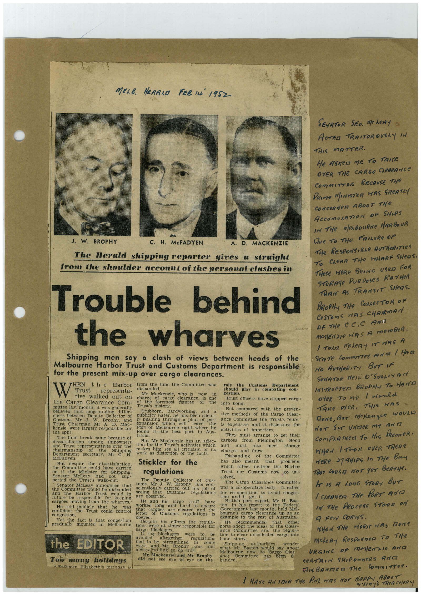

Book 1 · scan 030


Description
Transcription
Context
Review notes
Compare the machine draft with the scan. Handwriting and names need human review.
Artifacts
Edit the artifacts field in this note’s frontmatter to change these records. This summary is generated.
B01-S030-A01 — Newspaper clipping & Handwritten note — Book 1, scan 030
Types: Newspaper clipping, Handwritten note
Scope: Whole scanned page; individual items can be split out during review.
Caption: Not mapped yet.
Caption source: Not recorded yet.
Caption status: unmapped
Machine transcription
MELB. HERALA FER. IN 1952. J. W. BROPHY C. H. McFADYEN A. D. MACKENZIE The Herald shipping reporter gives a straight from the shoulder account of the personal clashes in Trouble behind the wharves Shipping men say a clash of views between heads of the Melbourne Harbor Trust and Customs Department is responsible for the present mix-up over cargo clearances. THEN the Harbor from the time the Committee was role the Custems W Department Trust representa- disbanded. tive walked out on Mr Mackenzie, who is now in should play in combating con- gestion. charge of cargo clearance, the Cargo Clearance Com- or use toremost is one Trust officers have slapped cargo figures of the into bond. mittee last month, it was generally Trust's history. believed that longstanding differ- Stubborn. hardworking, and But compared with the preven- ences between Deputy Collector of Customs Mr J. W. Brophy, and publicity hater, he has been silent- tive methods of the Cargo Clear- ly pushing through a plan of port ance Committee the Trust's "cure" Trust Chairman Mr A. Mac- kenzie. were largely responsible for expansion which will leave the is expensive and it dislocates the Port of Melbourne right where he the split. found it-the best port in Aus- activities of importers. The final break came because of tralia. They must arrange to get their among shipowners But Mr Mackenzie has an affec- cargoes from Flemington Bond and Trust representatives over the tion for the Trusts activities which and must also meet storage of makes him see all criticism of its Department secretary, Mr work as distortion of the facts. charges and fines. McFadyen. of the Committee But despite the dissatisfaction. Stickler for the Disbanding has also meant that problems the Committee could have carried which affect neither the Harbor on if the Minister for Shipping, regulations Trust nor Customs now go un- Senator McLeay. had sup- selved. ported the Trust's walk-out. The Deputy Collector of Cus- Senator McLeay announced that toms. Mr J. W. Brophy, has con- The Cargo Clearance Committee the Committee would be disbanded Harbor Trust would in seeing that Customs for co-operation to avoid conges- future be responsible for keeping regulations was a co-operative body, It called are observed. got it. cargoes moving from the wharves. He and his large staff have British port expert, Mr H. Bas- He said publicly that he worked long and hard to ensure ten, in his report to the Federal content the Trust could control congestion. letter cargoes are cleared and the letter Customs Government last month, held Mel- regulations bourne's cargo clearance obeyed. example to the rest of Yet the fact is that congestion Australia. gradually mounted mn Melbouine Despite his efforts the regula- He recommended that other tions were at times responsible for bolts acoot the ideas of the clear. bleckages. Call the blockages were to be Committee and the regula- tion to clear uncollected cargo into the EDITOR avoided altogether, regulations bond stores. had to be Swear med in some ways, and Mr Brophy was not always willing to do this. Too many holidays 1 SeAneen Elizabeth's birthday is Mr Mackenzie and Mr Brophy did not see eye to eye on what Mr Melbourne ance Committee banded. would say abou its Sargo Clea has SENATOR SEO. MOLeRy o ACTER TRAITOROUSAY IN THIS MATTER. He ASReA ME TO TANE OVER THE CARGO CLeARANCE COmMITTEE BECAUSE THe PRIme MeNISTeR WAS SReATLY CONCeRNeR ABOUT THe ACCUmULATION OF SHIPS IN THe Mes BOURNe HARBOUR Де то THe FRILURe OF THe RESPONSIBLe AUTHORITIES TO CLEAR THe HHARF SHeOS. THeSe HERe BeING USeD FOR STORAGe PURPOSeS RATHeR THAN AS TRANSIT SHeS. BROPHy THe COLLECTOR OV CUSTOmS HAS CHAIRMAN OF THe CC.C AnT MAlEriZe HAS A memBeR. 1 Torn meteRy iT wAS A NO AUTHORITY BUT IF SeNATOR NeIL O'SULLIVAN INSTRUCTeD BRODI, TO HAND oteR To me I would TRIce OYeR. THIS WAS Done, BuT melenge woulD NoT Sir UndeR me Arri COmPLATNeR TO HIS PRemIeR. WHeN I TOOK OVeR THERe weRe 279H,Ps in THe Bay THAT COULD NOT GOT BERTyS. IT IS A LONG STORY BUT I chenNeR THe PORT ANT In The PRocess SToon oN A Fen CoRNS. WHeN The HORIwAS Done makeAy ResponDen To THe URGINC oF malEnzIe AND CERTAIN SHIPOWNeRS AND MIsBonmeR THe CommiTTee. I HATE AN INCA THe PA HAS NOT HAPPY ABOUT